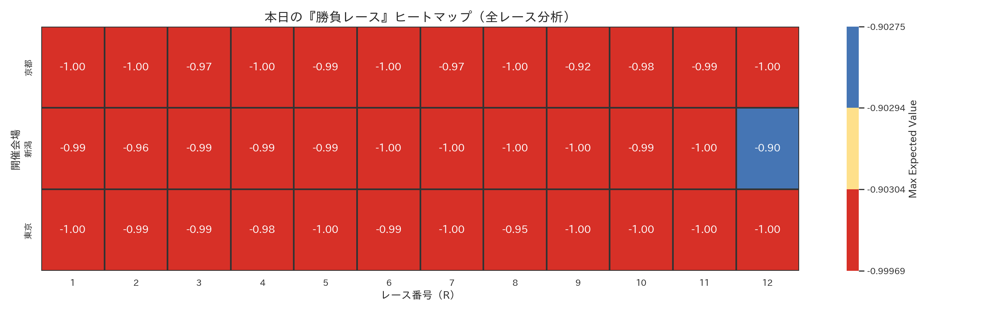
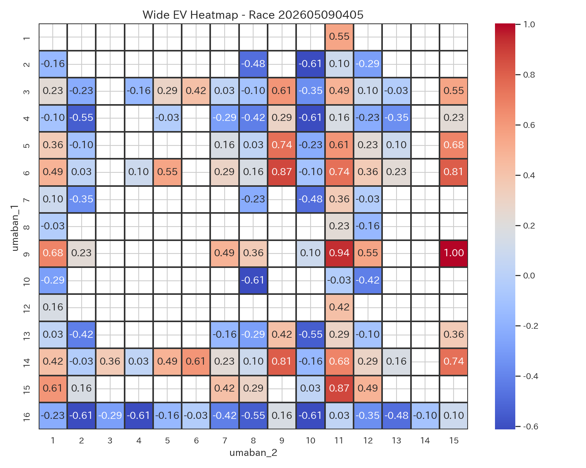
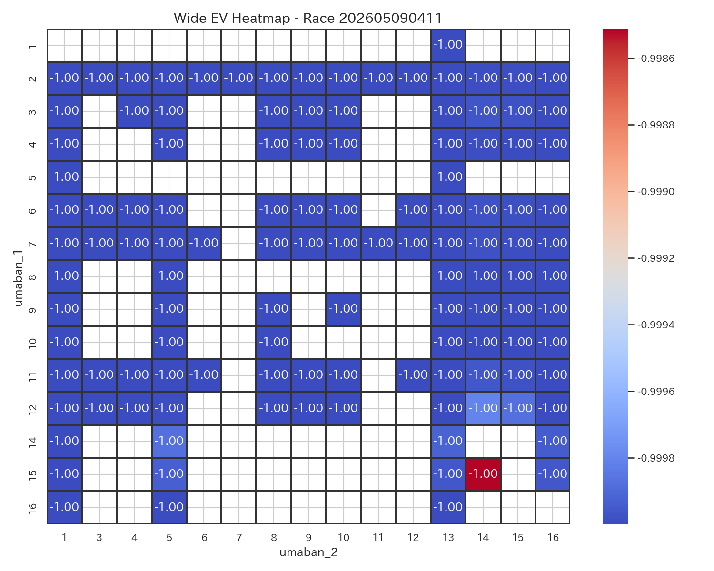
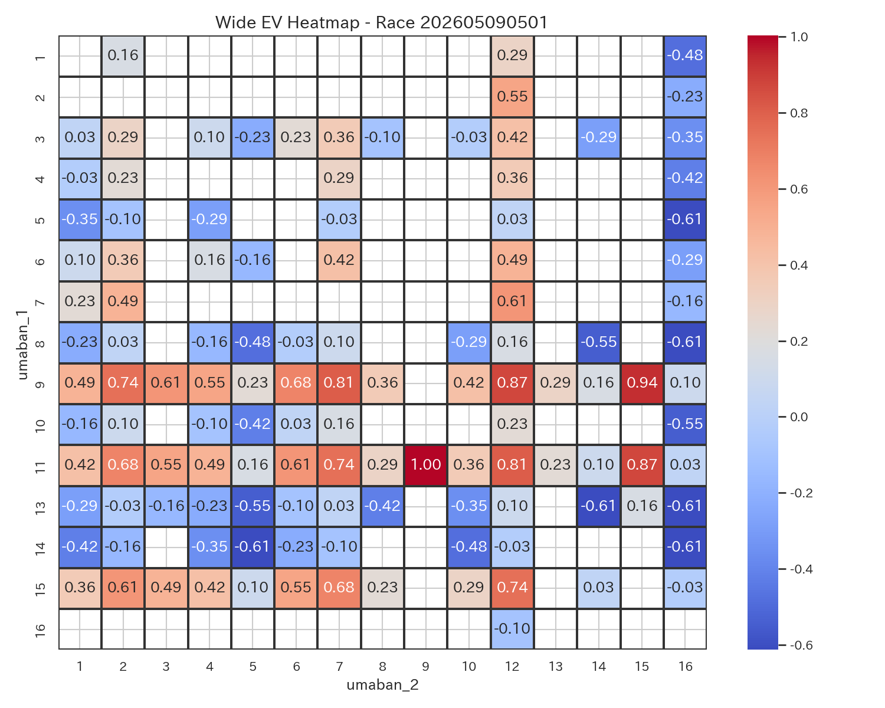
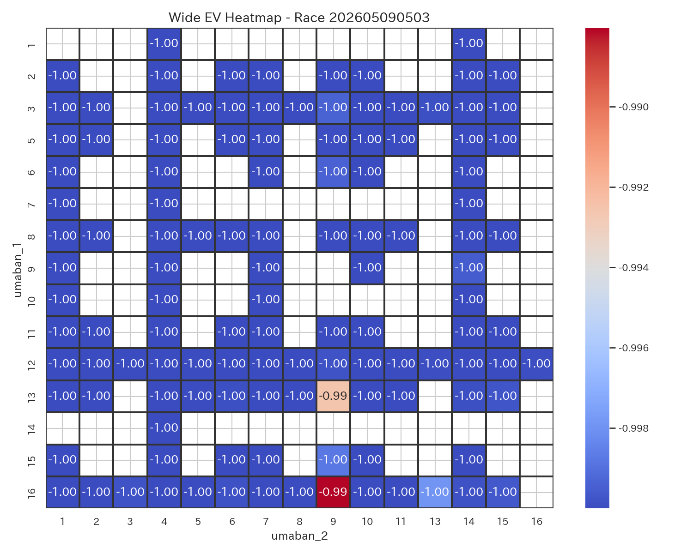
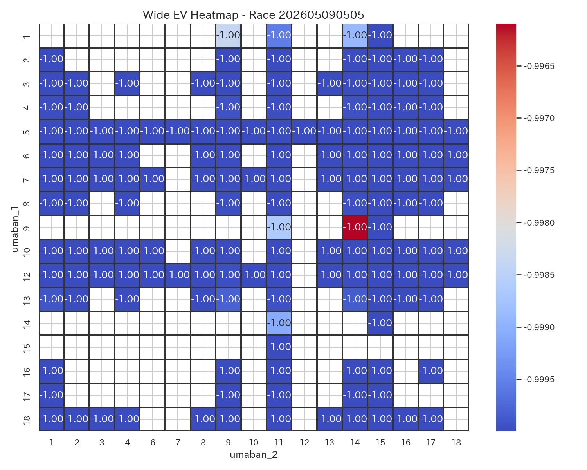
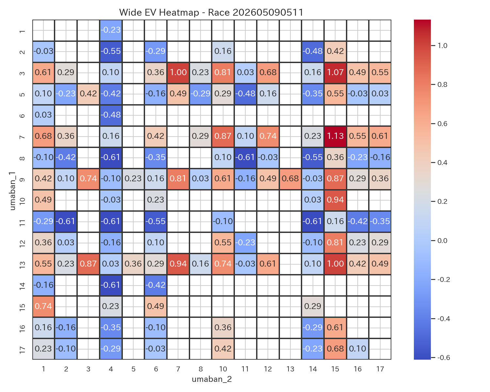
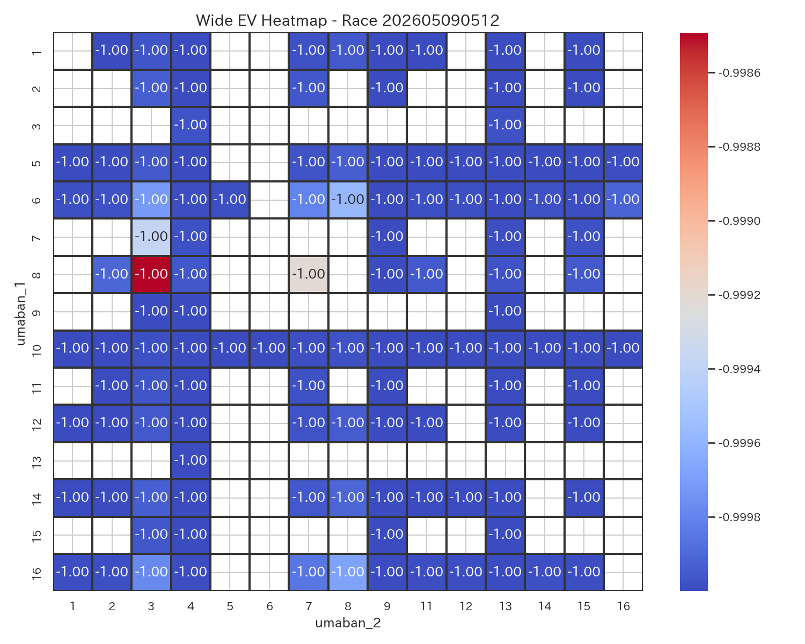
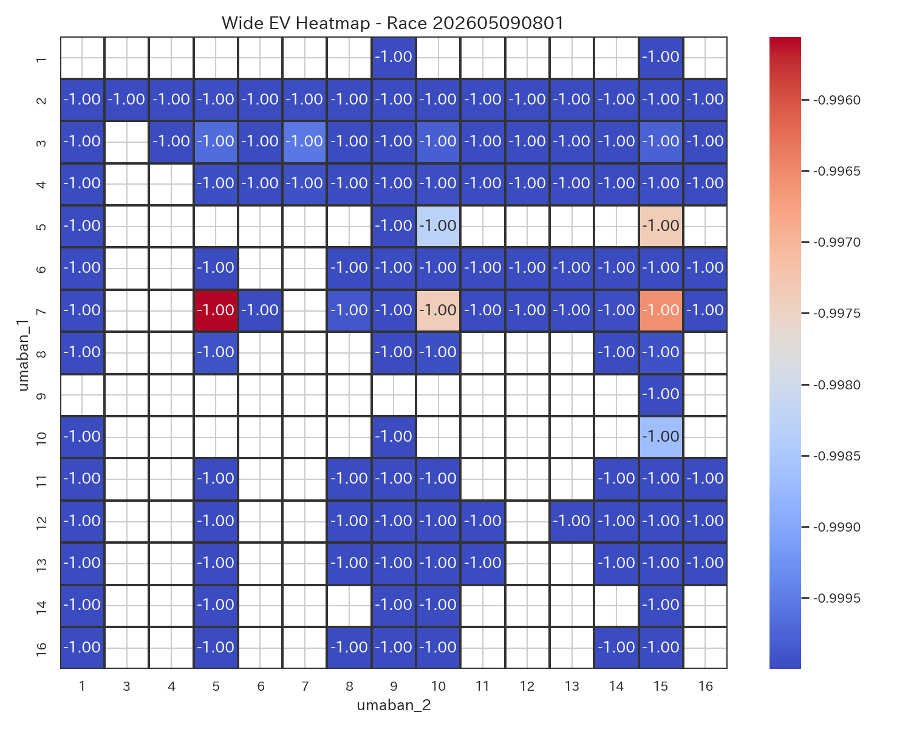
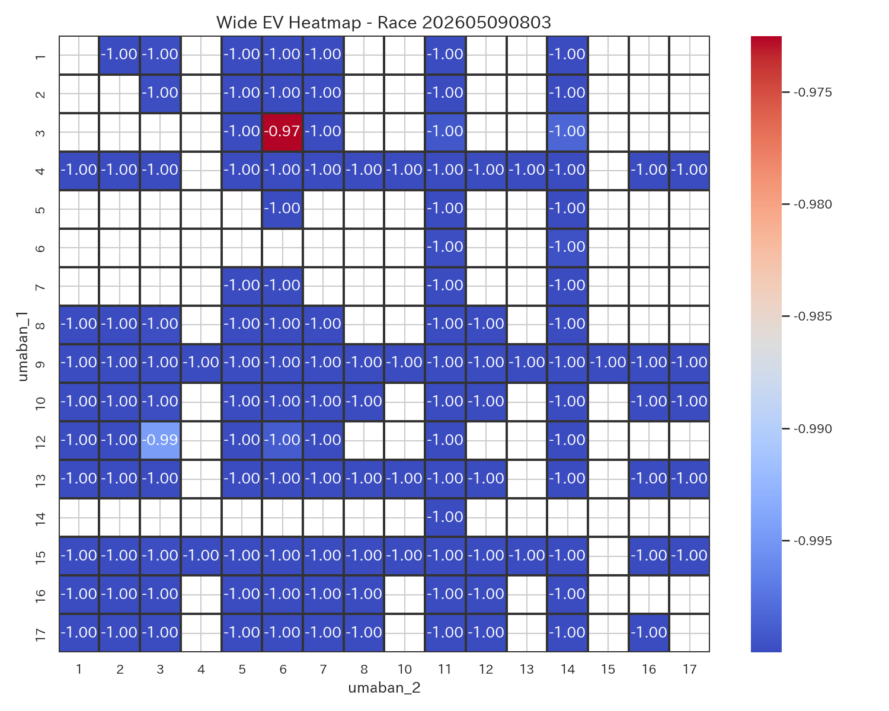
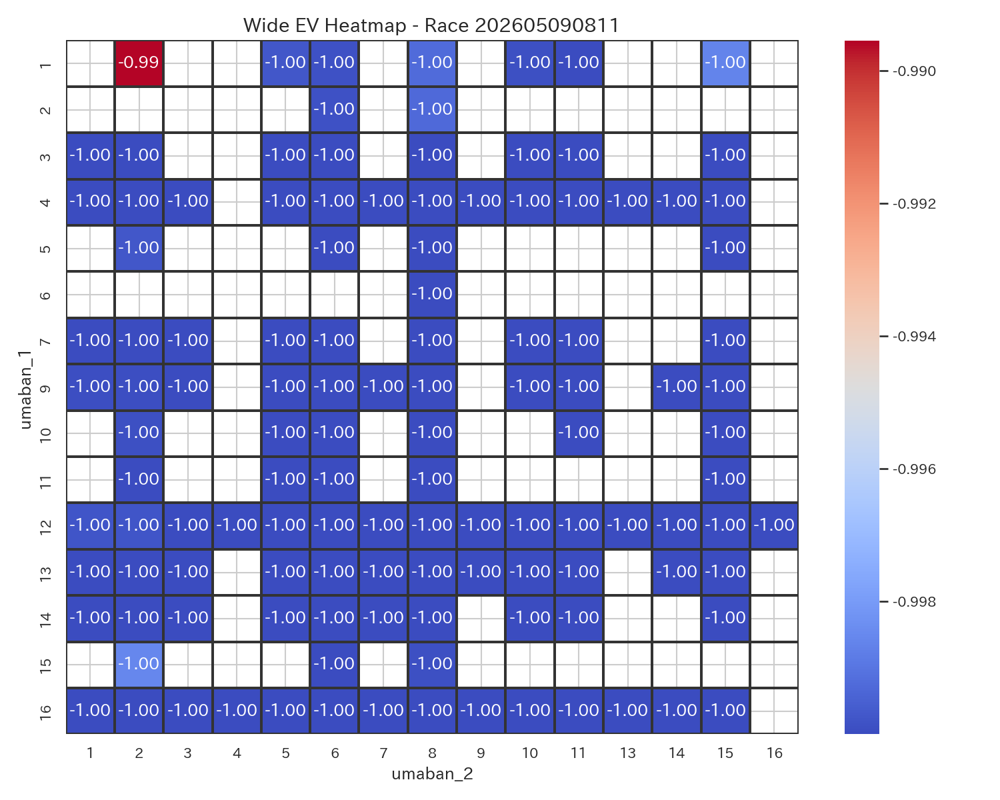
| race_label_ui | race_score | difficulty_score | comment |
|---|---|---|---|
| 東京5R | 0.800000 | 0.750000 | 勝負度が非常に高いレースです。 やや荒れやすい傾向があります。 本命は 3-15。 EV=1.26, p_hit=0.129 とバランスが良好です。 次点候補は 5-15。 EV=1.20。 リスクが高いため、賭け金は控えめが推奨されます。 |
| 東京11R | 0.739517 | 0.702727 | 勝負度が高めのレースです。 やや荒れやすい傾向があります。 本命は 7-15。 EV=1.13, p_hit=0.129 とバランスが良好です。 次点候補は 3-15。 EV=1.07。 リスクが高いため、賭け金は控えめが推奨されます。 |
| 京都3R | 0.719162 | 0.697675 | 勝負度が高めのレースです。 やや荒れやすい傾向があります。 本命は 13-7。 EV=1.07, p_hit=0.129 とバランスが良好です。 次点候補は 13-5。 EV=1.07。 適度なリスクで、標準的な賭け方が適しています。 |
| 新潟11R | 0.678971 | 0.653310 | 勝負度が高めのレースです。 やや荒れやすい傾向があります。 本命は 6-10。 EV=1.00, p_hit=0.129 とバランスが良好です。 次点候補は 7-10。 EV=0.94。 適度なリスクで、標準的な賭け方が適しています。 |
| 京都1R | 0.678971 | 0.653310 | 勝負度が高めのレースです。 やや荒れやすい傾向があります。 本命は 12-11。 EV=1.00, p_hit=0.129 とバランスが良好です。 次点候補は 11-1。 EV=0.94。 適度なリスクで、標準的な賭け方が適しています。 |
| 東京1R | 0.678971 | 0.653310 | 勝負度が高めのレースです。 やや荒れやすい傾向があります。 本命は 11-9。 EV=1.00, p_hit=0.129 とバランスが良好です。 次点候補は 9-15。 EV=0.94。 適度なリスクで、標準的な賭け方が適しています。 |
| 新潟5R | 0.678971 | 0.653310 | 勝負度が高めのレースです。 やや荒れやすい傾向があります。 本命は 9-15。 EV=1.00, p_hit=0.129 とバランスが良好です。 次点候補は 9-11。 EV=0.94。 適度なリスクで、標準的な賭け方が適しています。 |
| 東京12R | 0.678544 | 0.651582 | 勝負度が高めのレースです。 やや荒れやすい傾向があります。 本命は 12-9。 EV=1.00, p_hit=0.129 とバランスが良好です。 次点候補は 9-13。 EV=0.94。 適度なリスクで、標準的な賭け方が適しています。 |
| 京都11R | 0.675704 | 0.648929 | 勝負度が高めのレースです。 やや荒れやすい傾向があります。 本命は 14-11。 EV=1.00, p_hit=0.129 とバランスが良好です。 次点候補は 13-11。 EV=0.87。 適度なリスクで、標準的な賭け方が適しています。 |
| 東京3R | 0.675704 | 0.648929 | 勝負度が高めのレースです。 やや荒れやすい傾向があります。 本命は 10-7。 EV=1.00, p_hit=0.129 とバランスが良好です。 次点候補は 8-7。 EV=0.87。 適度なリスクで、標準的な賭け方が適しています。 |
| race_label_ui | bet_type | selection_ui | umaban_1 | umaban_2 | bet_score | ev | p_hit | odds |
|---|---|---|---|---|---|---|---|---|
| 東京5R | wide | 3-15 | 3 | 15 | 0.710000 | 1.260294 | 0.12916 | 17.5 |
| 東京5R | wide | 5-15 | 5 | 15 | 0.699655 | 1.195715 | 0.12916 | 17.0 |
| 東京3R | wide | 10-7 | 10 | 7 | 0.643761 | 1.001975 | 0.12916 | 15.5 |
| 東京3R | wide | 8-7 | 8 | 7 | 0.623072 | 0.872815 | 0.12916 | 14.5 |
| 東京1R | wide | 11-9 | 11 | 9 | 0.644415 | 1.001975 | 0.12916 | 15.5 |
| 東京1R | wide | 9-15 | 9 | 15 | 0.634070 | 0.937395 | 0.12916 | 15.0 |
| 東京12R | wide | 12-9 | 12 | 9 | 0.644330 | 1.001975 | 0.12916 | 15.5 |
| 東京12R | wide | 9-13 | 9 | 13 | 0.633985 | 0.937395 | 0.12916 | 15.0 |
| 東京11R | wide | 7-15 | 7 | 15 | 0.677214 | 1.131135 | 0.12916 | 16.5 |
| 東京11R | wide | 3-15 | 3 | 15 | 0.666869 | 1.066555 | 0.12916 | 16.0 |
| 新潟5R | wide | 9-15 | 9 | 15 | 0.644415 | 1.001975 | 0.12916 | 15.5 |
| 新潟5R | wide | 9-11 | 9 | 11 | 0.634070 | 0.937395 | 0.12916 | 15.0 |
| 新潟11R | wide | 6-10 | 6 | 10 | 0.644415 | 1.001975 | 0.12916 | 15.5 |
| 新潟11R | wide | 7-10 | 7 | 10 | 0.634070 | 0.937395 | 0.12916 | 15.0 |
| 京都3R | wide | 13-5 | 13 | 5 | 0.662798 | 1.066555 | 0.12916 | 16.0 |
| 京都3R | wide | 13-7 | 13 | 7 | 0.662798 | 1.066555 | 0.12916 | 16.0 |
| 京都1R | wide | 12-11 | 12 | 11 | 0.644415 | 1.001975 | 0.12916 | 15.5 |
| 京都1R | wide | 11-1 | 11 | 1 | 0.634070 | 0.937395 | 0.12916 | 15.0 |
| 京都11R | wide | 14-11 | 14 | 11 | 0.643761 | 1.001975 | 0.12916 | 15.5 |
| 京都11R | wide | 4-11 | 4 | 11 | 0.623072 | 0.872815 | 0.12916 | 14.5 |
勝負度が非常に高いレースです。 やや荒れやすい傾向があります。 本命は 3-15。 EV=1.26, p_hit=0.129 とバランスが良好です。 次点候補は 5-15。 EV=1.20。 リスクが高いため、賭け金は控えめが推奨されます。
勝負度が高めのレースです。 やや荒れやすい傾向があります。 本命は 7-15。 EV=1.13, p_hit=0.129 とバランスが良好です。 次点候補は 3-15。 EV=1.07。 リスクが高いため、賭け金は控えめが推奨されます。
勝負度が高めのレースです。 やや荒れやすい傾向があります。 本命は 13-7。 EV=1.07, p_hit=0.129 とバランスが良好です。 次点候補は 13-5。 EV=1.07。 適度なリスクで、標準的な賭け方が適しています。
勝負度が高めのレースです。 やや荒れやすい傾向があります。 本命は 6-10。 EV=1.00, p_hit=0.129 とバランスが良好です。 次点候補は 7-10。 EV=0.94。 適度なリスクで、標準的な賭け方が適しています。
勝負度が高めのレースです。 やや荒れやすい傾向があります。 本命は 12-11。 EV=1.00, p_hit=0.129 とバランスが良好です。 次点候補は 11-1。 EV=0.94。 適度なリスクで、標準的な賭け方が適しています。
勝負度が高めのレースです。 やや荒れやすい傾向があります。 本命は 11-9。 EV=1.00, p_hit=0.129 とバランスが良好です。 次点候補は 9-15。 EV=0.94。 適度なリスクで、標準的な賭け方が適しています。
勝負度が高めのレースです。 やや荒れやすい傾向があります。 本命は 9-15。 EV=1.00, p_hit=0.129 とバランスが良好です。 次点候補は 9-11。 EV=0.94。 適度なリスクで、標準的な賭け方が適しています。
勝負度が高めのレースです。 やや荒れやすい傾向があります。 本命は 12-9。 EV=1.00, p_hit=0.129 とバランスが良好です。 次点候補は 9-13。 EV=0.94。 適度なリスクで、標準的な賭け方が適しています。
勝負度が高めのレースです。 やや荒れやすい傾向があります。 本命は 14-11。 EV=1.00, p_hit=0.129 とバランスが良好です。 次点候補は 13-11。 EV=0.87。 適度なリスクで、標準的な賭け方が適しています。
勝負度が高めのレースです。 やや荒れやすい傾向があります。 本命は 10-7。 EV=1.00, p_hit=0.129 とバランスが良好です。 次点候補は 8-7。 EV=0.87。 適度なリスクで、標準的な賭け方が適しています。